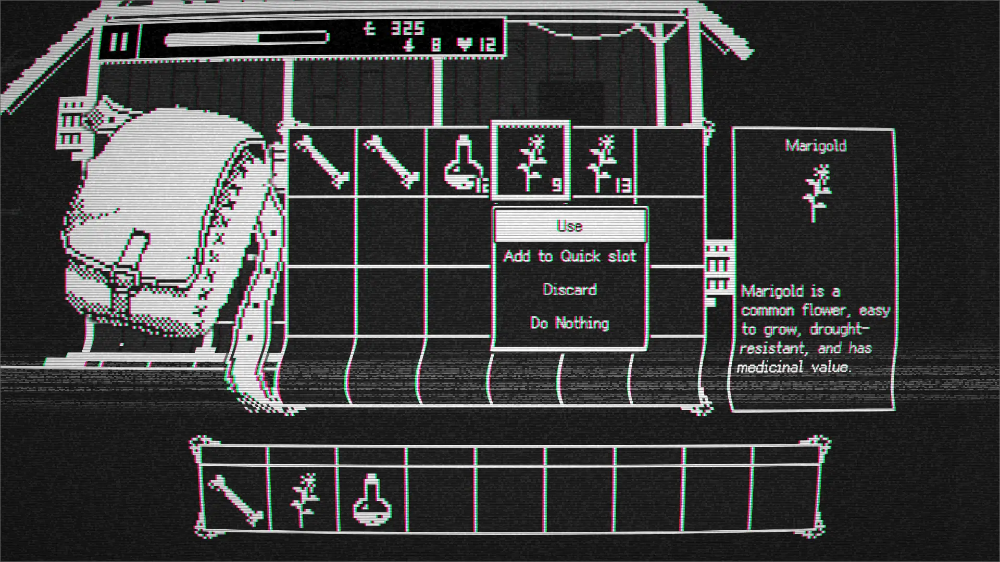
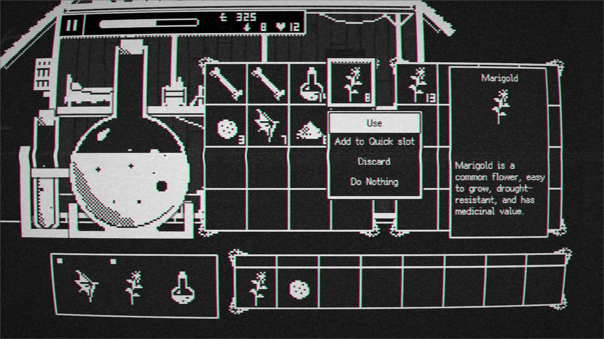
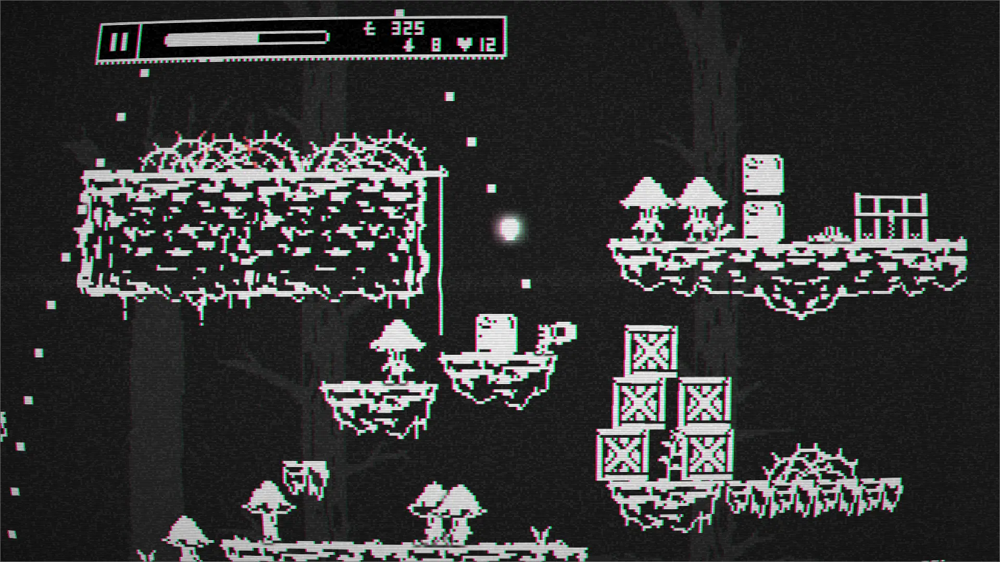
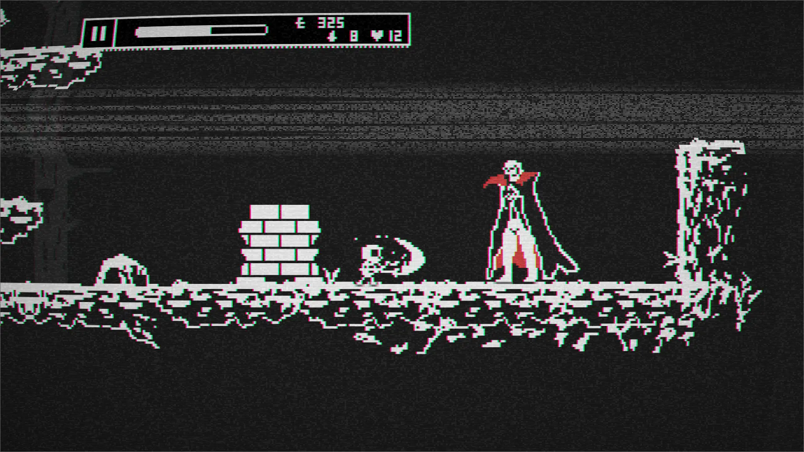
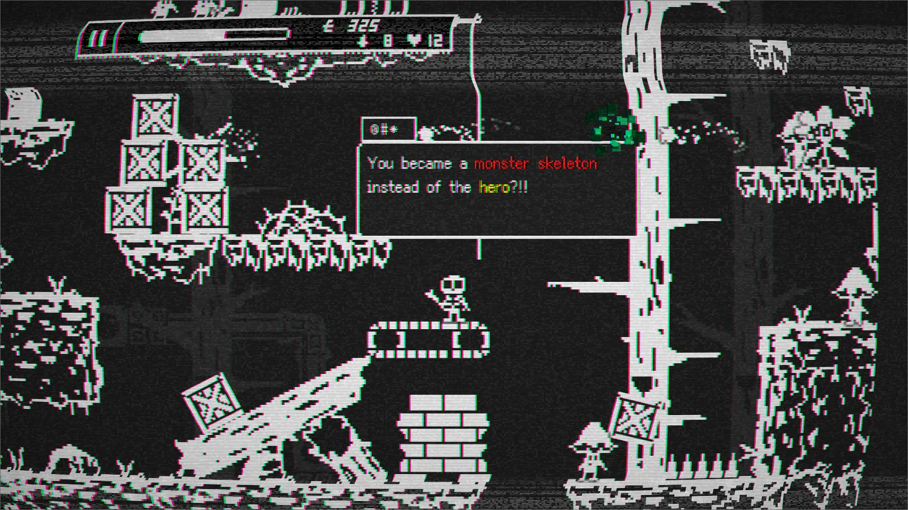
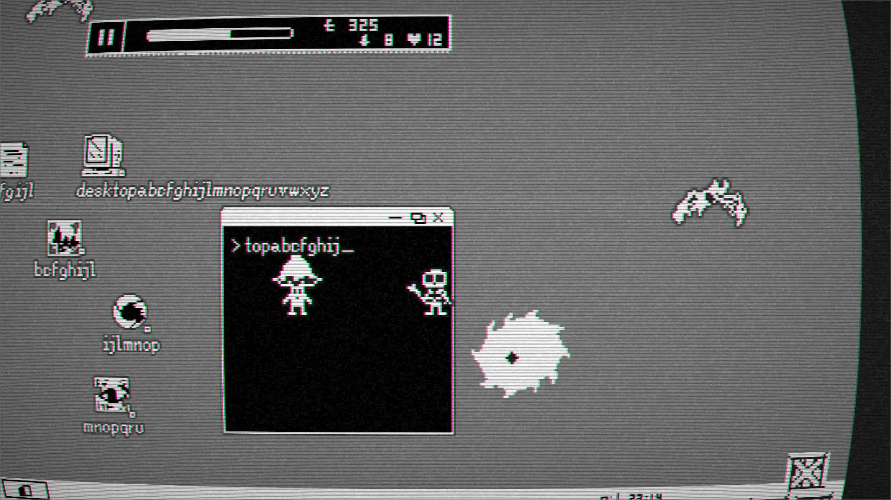
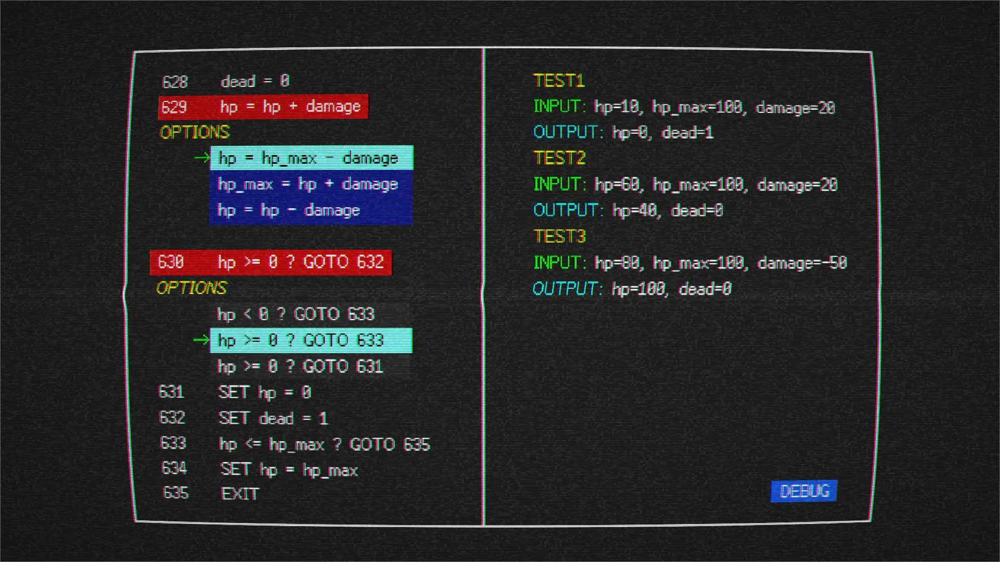
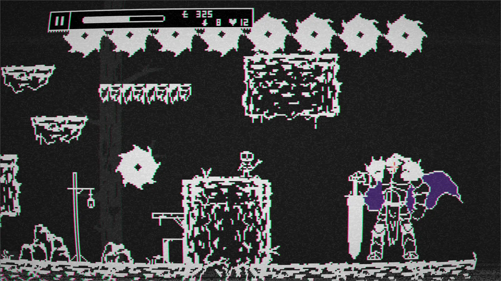
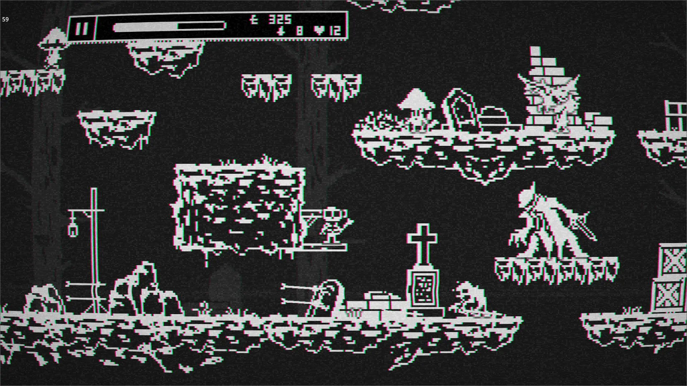

Miracle Corp. is a metagame and a Metroidvania game. In the story, you will play a mysterious retro game developed by Miracle Corp., guided by an AI tour guide. Uncover the hidden truths behind the game. There are many bugs in this game. One of these bugs transforms the player into a monster skeleton instead of the main character.
Features:
- Retro Black-and-White Pixel Art: Enjoy smooth animations in a nostalgic visual style.
- Challenging Levels and Satisfying Combat: Conquer difficult stages and engage in fluid battles.
- Unique Skeleton Mechanics: Players with skeletal bodies can exploit skull-related abilities, including decapitation, resurrection, and body swapping.
- Diverse Combat Techniques and Magic: Engage in fun and strategic battles.
- Equipment, Weapons, and Character Growth System: Explore and evolve your character.
- Sandbox Elements: Between battles, indulge in activities like farming, alchemy, and trading.
- Epic Boss Battles: Sharpen your skills and devise clever strategies.
- Challenging Platforming Levels: Satisfy your desire for a tough platforming experience.
- Mini Programming Game: Players must fix bugs in this retro game.
- Branching Storylines from Mid-Game Onward: Your choices matter!